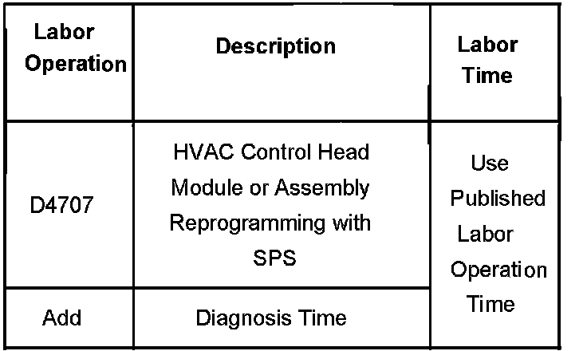

A/C - Set Temperature Doesn't Match Actual Temperature
Bulletin No.: 06-01-39-008Date: September 07, 2006
TECHNICAL
Subject:
Automatic HVAC System Set Temperature Does Not Provide Comfort (Update HVAC Control Module Software)
Models:
2007 Cadillac Escalade Models
2007 Chevrolet Avalanche, Suburban, Tahoe
2007 GMC Yukon Models
with Automatic Temperature Control HVAC System (RPO CJ2)
Condition
Some customers may comment that they have to adjust the Heating, Ventilation and Air Conditioning (HVAC) system set temperature lower to get the system to blow cool air. For example: If the customer wants to keep the in vehicle temperature at 22°C (72°F), they may have to reset the HVAC control head temperature setting to 18°C (65°F) or lower to achieve the desired 22°C (72°F).
Cause
This condition may be caused by an HVAC control module software anomaly.
Correction
Technicians are to reprogram the HVAC control module with new service calibrations contained in TIS version 5.0 or later, which has already been released. Refer to the HVAC Control Module Programming and Setup procedure in SI for more information. As always, make sure your Tech 2(R) is updated with the latest software version.
Warranty Information

For vehicles repaired under warranty, use the table.

Disclaimer